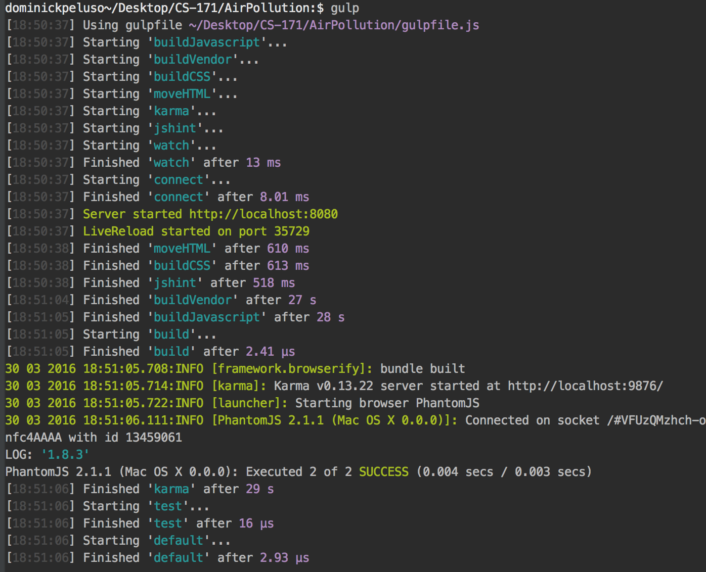

The steps we took to develop our solution.
We decided that we wanted to try our best to follow modern Javascript development best-practices. This included bootstrapping our project with build automation tools and test integration. Before we could start that process, we chose to host our project on GitHub. GitHub will not only host our web page but will also handle all version control. We started a new repository at this location: https://github.com/free-radicals/AirPollution
All of these technologies use Node.js to run, which is a Javascript runtime that runs on a local computer. Node has a package manager called NPM. Within NPM, we initialized the project, allowing us to add project dependencies. We first added Gulp, which is a task-runner for Node. Once Gulp was in the repo, we configured it to run JShint, Karma, Jasmine, a CSS minifier, a JS uglifier, Browserify, and live-reload server.
JShint is a linter that will alert us if we write any Javascript code that is non-standard or error-prone. Karma is a test runner which is configured to run Jasmine tests, used for providing test coverage in our code. We use gulp to move the source copy of our HTML file to the /dist/ directory of our repo. At the same time, we copy all CSS into the /dist/ repo, minifying it at the same time to reduce the overall payload. Similarly, our Javascript is bundled up in Browserify, minified, then copied over to /dist/, where the HTML file references it locally. Browserify is nice because it allows us to make our code modular, so we don’t have to cram all of our logic in a single file.
Lastly, the live-reload server allows us to navigate to http://localhost:8080/ to see the current
copy of our application. If any changes are made, this page automatically refreshes. Additionally,
Gulp repeats most processes when any code changes occur, so if we introduce a bug in the code it
will be caught by JShint or Karma and would show in the live-reload server instantly.
Now we can easily write quality Javascript code with a lot of tools on our side ensuring we see
mistakes being introduced as soon as they happen. All of this (once configured) can be activated
easily by typing “gulp” from the project directory:

TODO: Explain Vis.
Creating this visualization was pretty simple after a bit of exploration. In D3, each datum is a vertical line which is placed on the x coordinate with a simple scale. The tricky part was treating each line differently. Obviously, the user's home city should display differently from the "additional" cities they add to the chart. Given that we handled the current city within our Service object, it meant that we needed to have two sets of data in the chart. This worked, but meant I had to duplicate code more than I liked.
The chart also required an additional city selector, which meant we had to use typeahead.js again, like we did in the introduction. Because the view and logic code was not decoupled, we had to duplicate the CityPicker class, tweaking it slightly. I wasn't concerned about this duplication at the time, but we discovered that we really had to add the country to the typeahead suggestions for instances like "London, CA" and "London, UK", both showing as "London". Fixing this was more troublesome because it had to be fixed in two places instead of one.
TODO: Explain Vis.
TODO: Explain Vis.
TODO: Explain Vis.
TODO: Explain Vis.
TODO: Explain Vis.